Karen's Bagels
Project Type: Branding | App Design | Web Design
Problem to Solve: Karen’s Bagels are an eco-friendly bakery who sell bagels
and are looking to offer bagel deliveries. A strong brand identity was required that incorporates the owner's
love of 60s diners and includes the slogan 'freshly baked with love'. A clean, user-centric app design and
mobile-first web design were also needed.
Key Words: Unique | Handcrafted | Delicious | Sustainable | Nostalgic
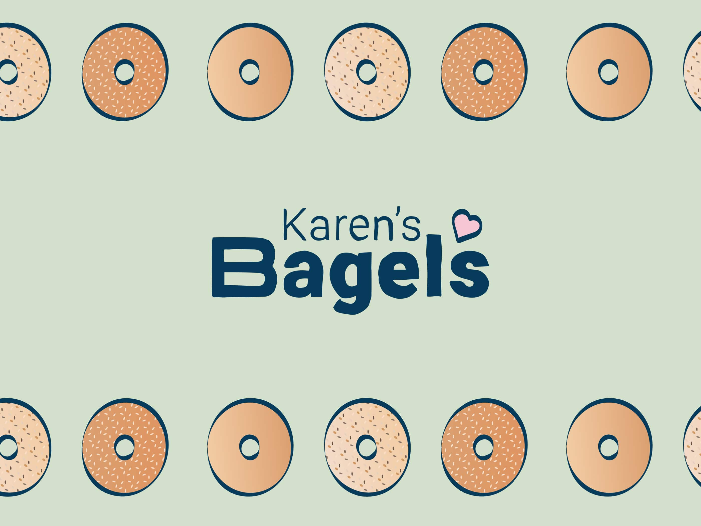
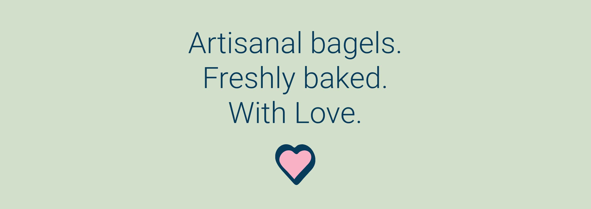
 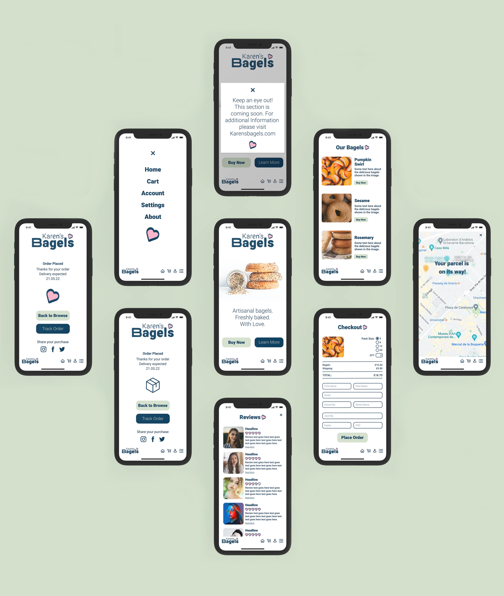
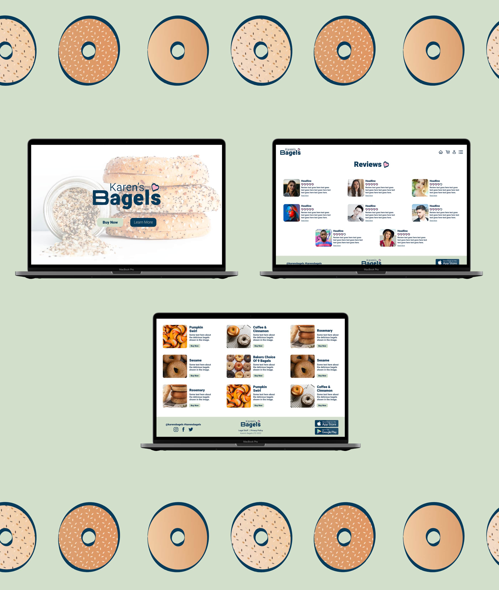
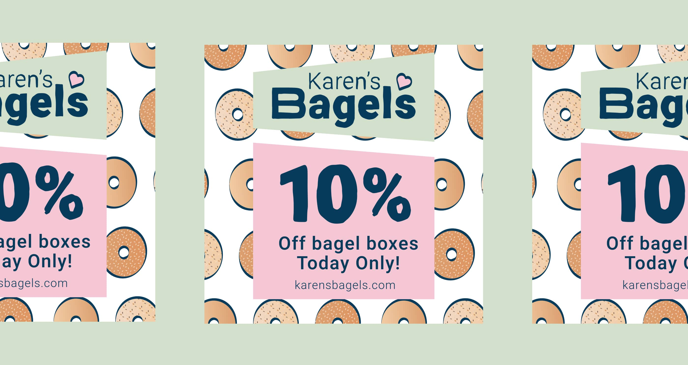
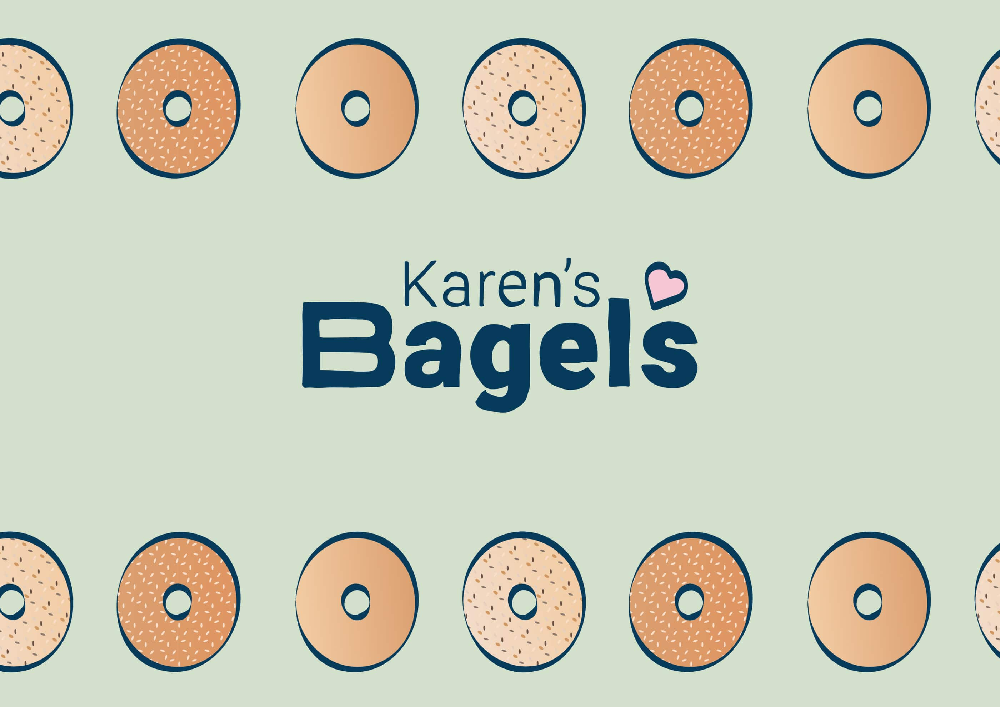
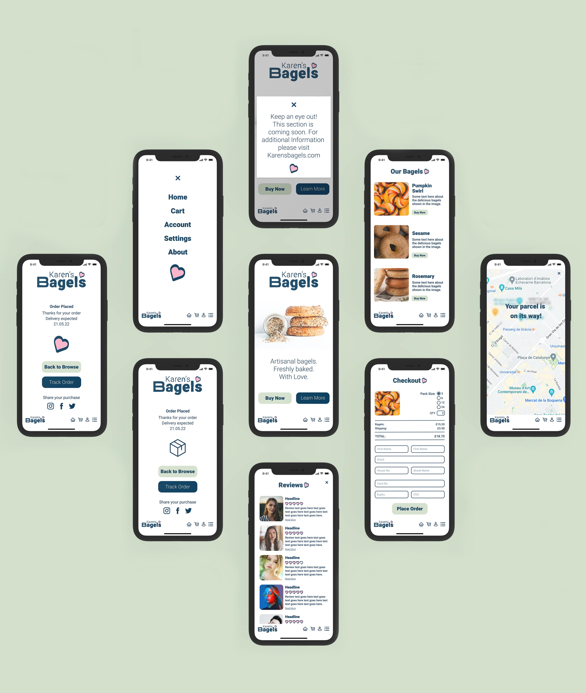
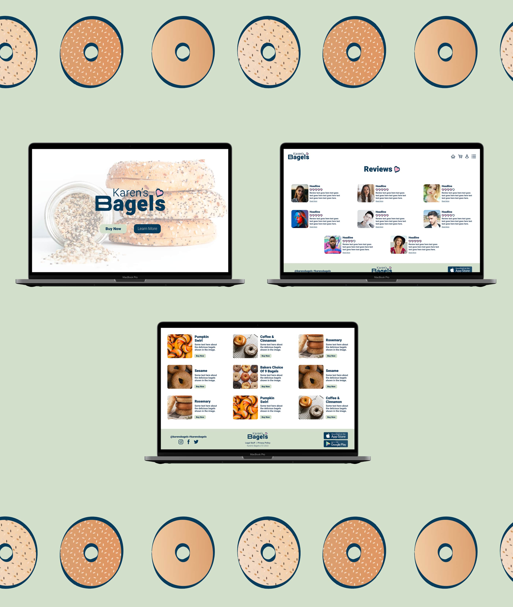
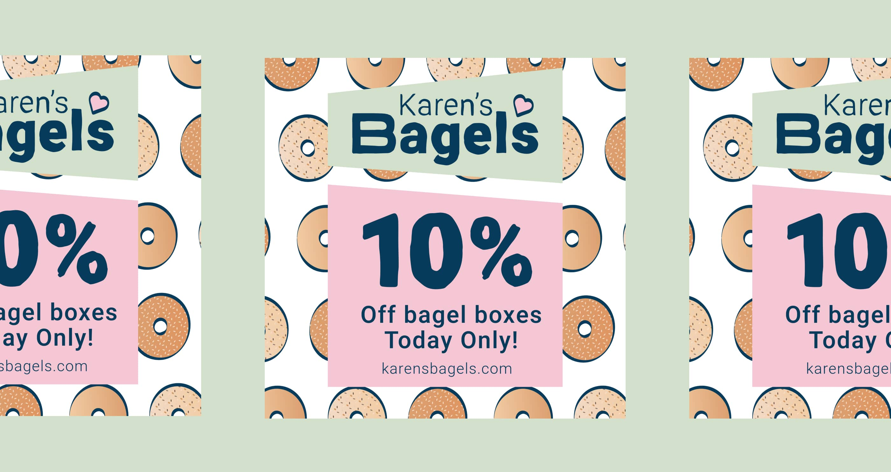
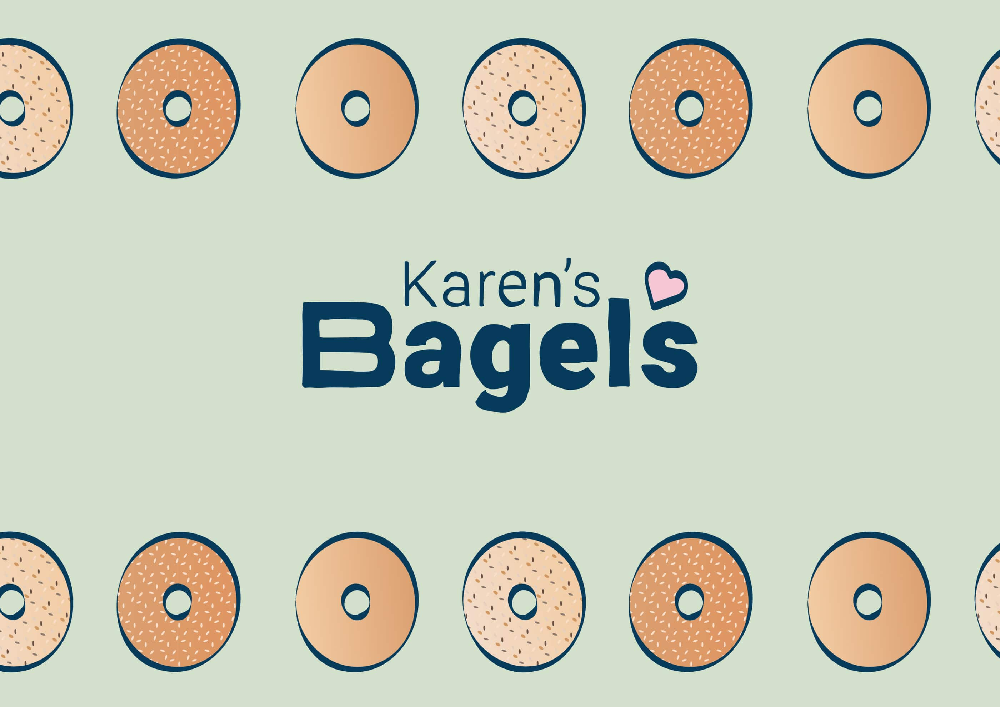
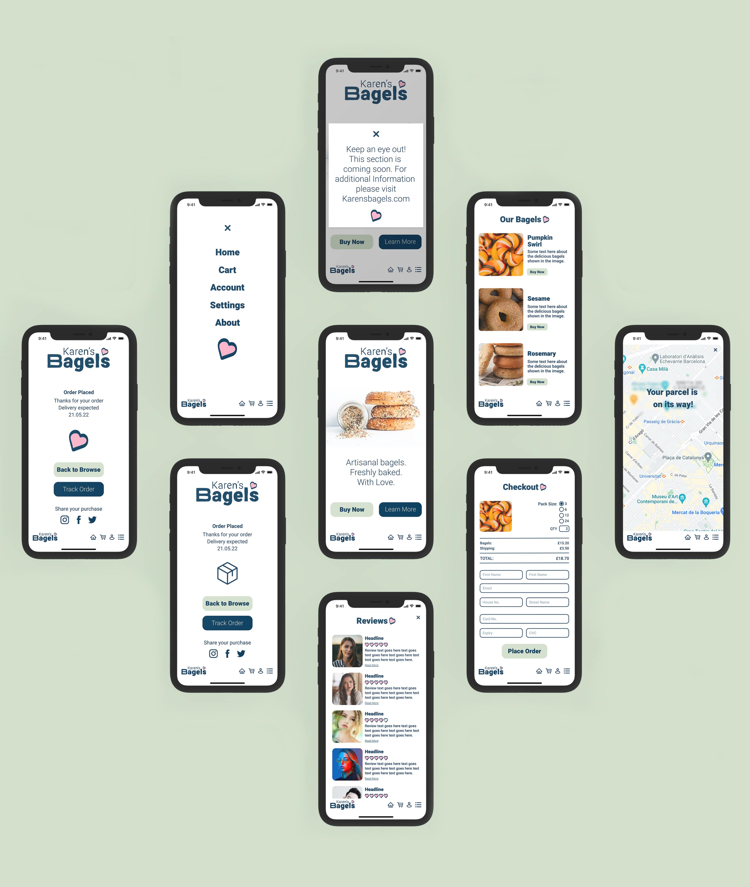
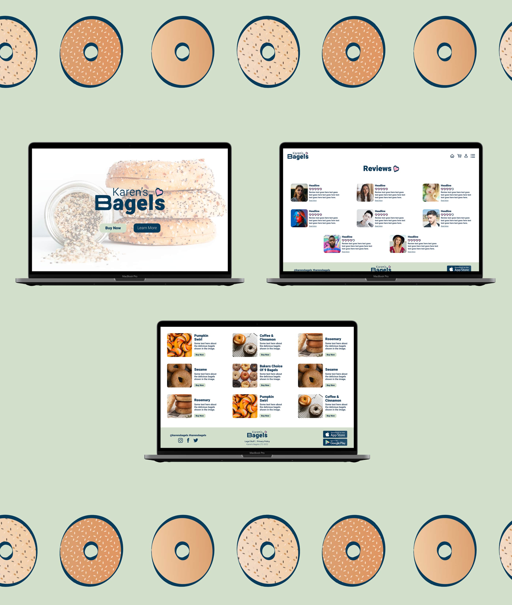
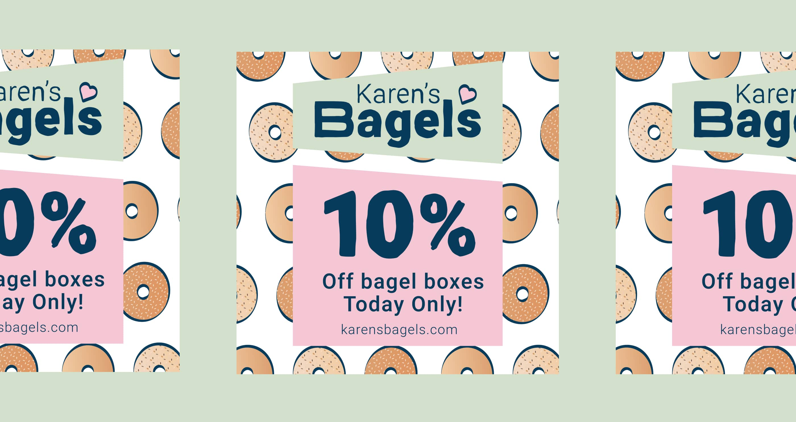
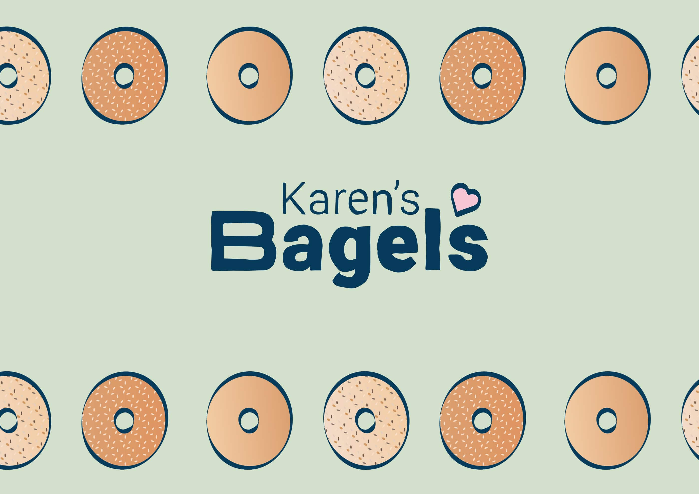